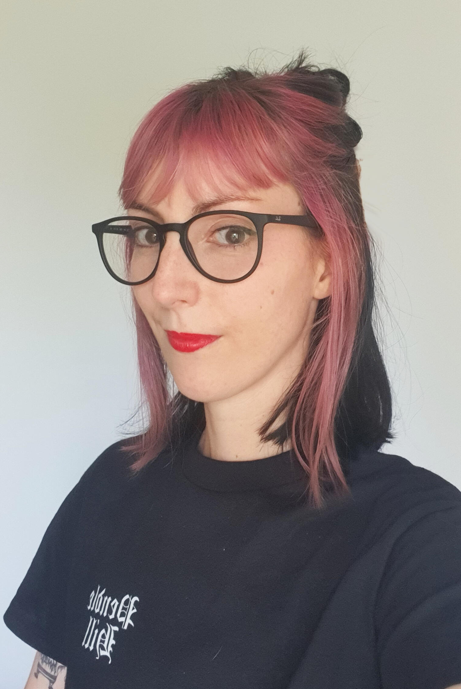

About
I'm a maths educator based in Melbourne, Australia, currently leading the maths team at reSolve.
I completed my PhD investigating comparative judgement as a pedagogical tool, alongside a long-standing interest in design thinking and philosophical inquiry in the classroom. I also run professional learning for teachers and develop curriculum resources.
What I believe
I love taking the road less travelled when it comes to teaching maths. Give me a dry textbook exercise and I'll find a way to turn it into a messy, hands-on investigation instead.
My favourite tools for this are arts and crafts, magic tricks, and puzzles. Anything that gets a "wait, how does that work?" out of a room.
My approach is built on problems with a low floor and high ceiling that allow learners to explore whatever direction interests them. The kind of tasks that get students thinking like real mathematicians.